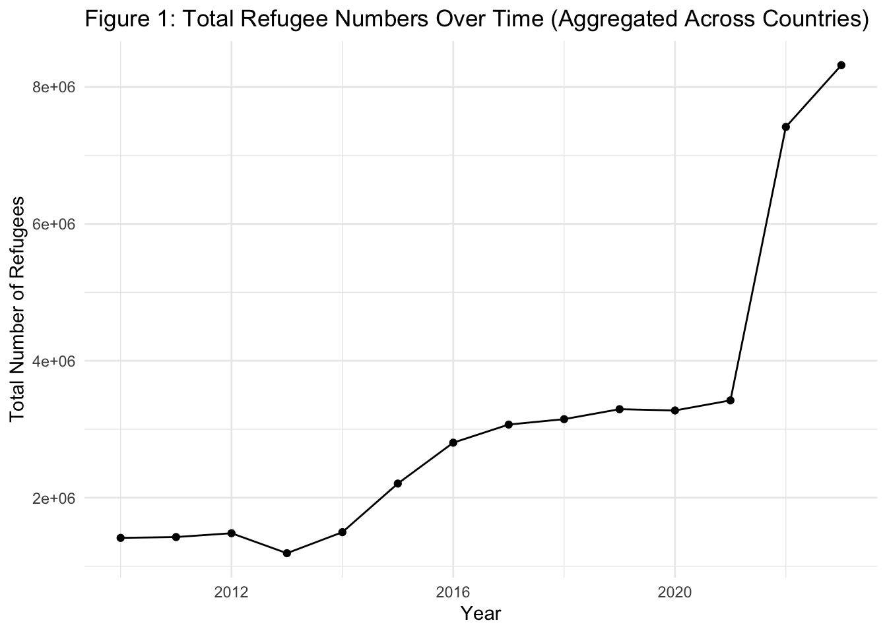
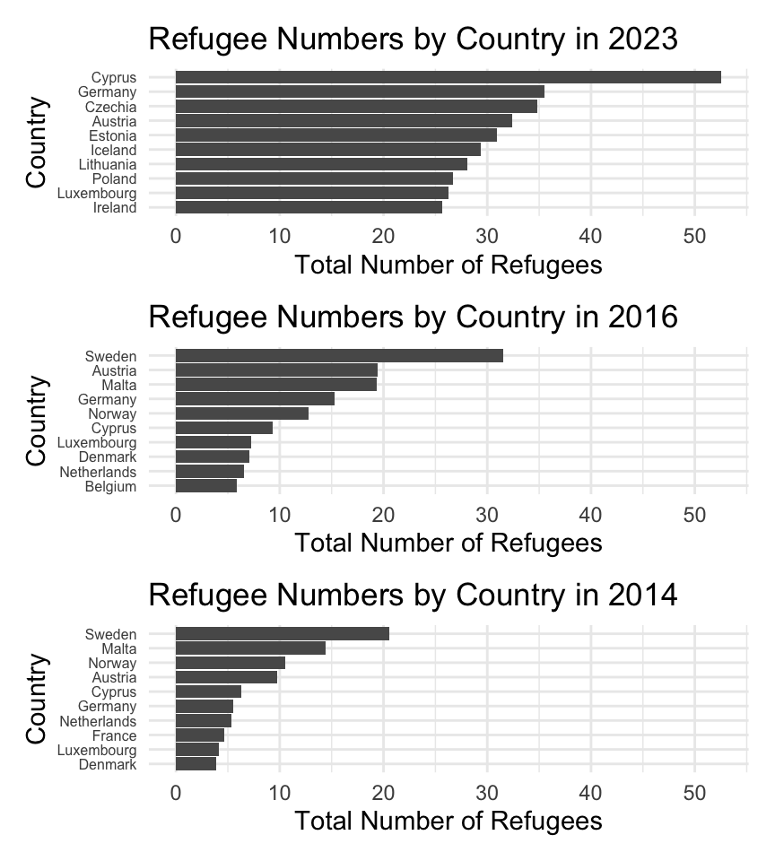
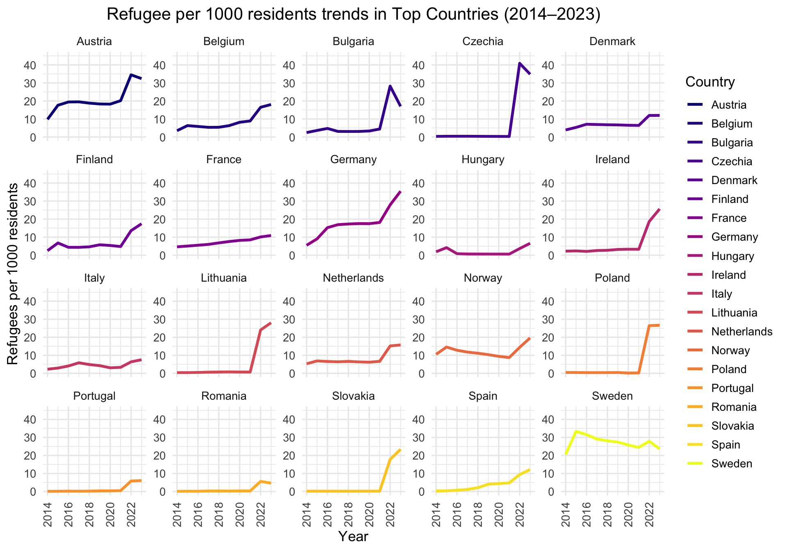
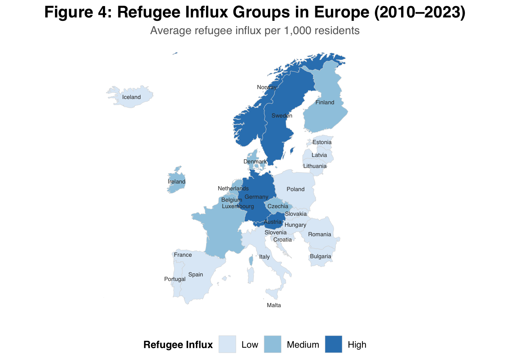
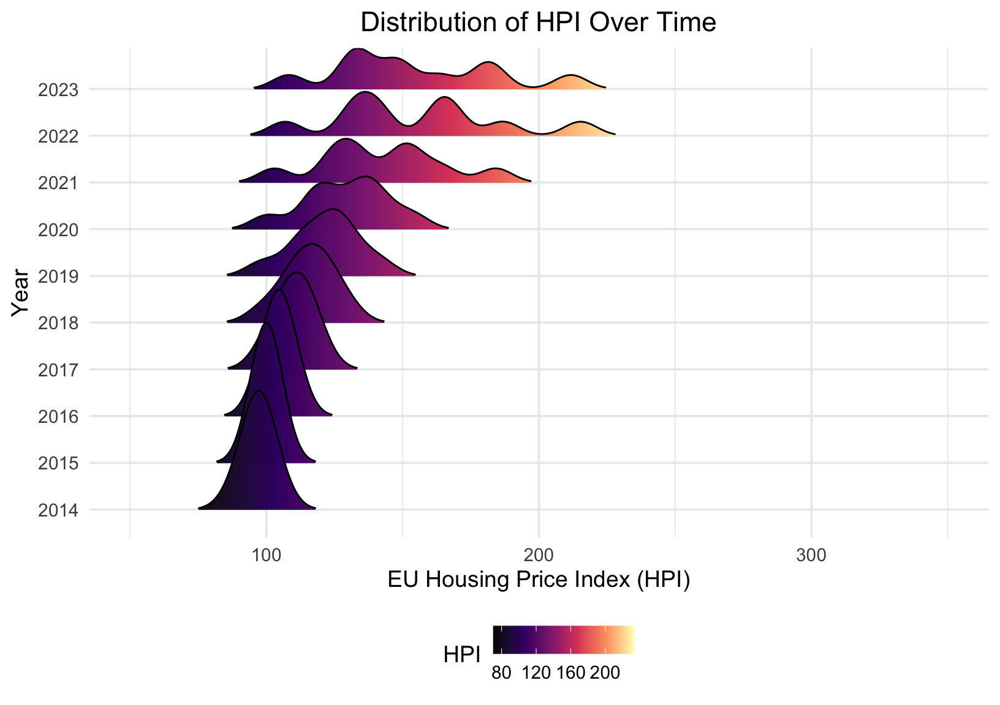
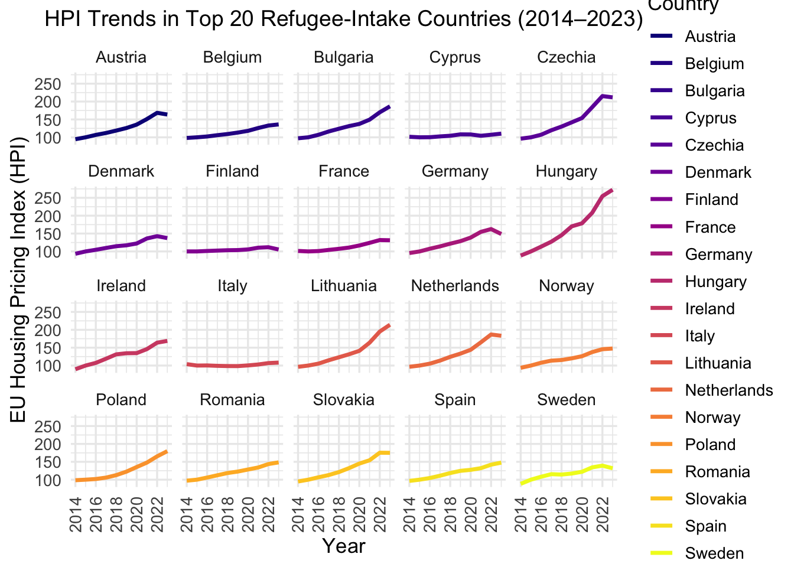

The Impact of Refugees on House Prices across EU Countries
Introduction
In recent decades, global conflicts, political instability, and humanitarian crises have contributed to a sharp rise in refugee movements worldwide. Prolonged wars in Syria, Afghanistan, and Ukraine; persecution in countries such as Myanmar and Eritrea; and sustained violence and displacement in other regions have forced millions of individuals to seek safety beyond their national borders. The European Union (EU) provides an important institutional context for understanding forced migration, as EU member states recognize asylum as a fundamental right under the 1951 Geneva Convention (European Commission, Migration & Home Affairs, 2021). To coordinate responsibility-sharing and standardize asylum procedures, EU countries established the Common European Asylum System (CEAS) in 1999.
A key turning point occurred in 2015, when Europe experienced an unprecedented surge in refugee arrivals and asylum applications. This episode placed substantial pressure on national asylum systems and prompted renewed debate about migration governance and burden sharing, motivating policy reforms and renewed coordination efforts at the EU level.
The increase in refugee arrivals has also generated debate about downstream economic and social impacts. One central concern is housing: refugee inflows may increase housing demand and affect local prices, though effects may vary across countries depending on settlement patterns, market tightness, and policy responses. This report examines the relationship between refugee intake and house price dynamics across European countries, leveraging cross-country differences in refugee inflows and integration frameworks.
Accordingly, the main research question is:
- How does the variation in refugee intake amongst European countries impact house prices?
Policy Background
The onset of the Syrian civil war in 2011 and other global crises forced millions of people to flee to neighboring states and Europe. Refugees and asylum seekers originated from conflict-affected countries such as Syria, Afghanistan, Iraq, and other regions experiencing political instability and violence.
In 2015, European countries recorded a historically high level of asylum applications and refugee arrivals. Some estimates place the total at approximately 1.3 million arrivals in that year (Pew Research Center, 2016). In response, EU governments negotiated relocation and burden-sharing arrangements intended to distribute a portion of arrivals across member states, although these policies were contested and unevenly implemented across countries.
Under the relocation framework, allocations were based on a distribution key using objective criteria (population size, GDP, prior asylum applications, and unemployment rates). Eligibility applied to applicants from nationalities with an EU-wide average recognition rate of at least 75%.
Refugees Landscape
Figure 1 plots the aggregate number of refugees and asylum seekers across the sample over time. The series displays a pronounced discontinuity around 2015, consistent with a major shock to asylum inflows. This structural break motivates distinguishing the post-2015 period in the descriptive analysis and in the empirical strategy.
Differential Country Policies
Cross-country differences in refugee inflows were substantial during the 2014–2016 period. Germany, Hungary, and Sweden emerged as primary destination countries, while the United Kingdom and France received comparatively fewer asylum applications (Pew Research Center, 2016). This heterogeneity provides a useful basis for comparative analysis across host countries, which is explored further in the descriptive section.
Data description
Refugee and asylum data are drawn from the United Nations High Commissioner for Refugees (UNHCR), which compiles population statistics on forcibly displaced populations and stateless persons. These data are sourced primarily from governments and UNHCR operations. Following UNHCR definitions (see Appendix), the analysis focuses on refugees and asylum seekers by host country. To enable meaningful cross-country comparison, refugee intake is standardized using refugees per 1,000 residents.
Housing prices are measured using the Eurostat House Price Index (HPI), which captures inflation in residential property prices. The HPI covers price changes for dwellings purchased by households (e.g., flats, detached houses, terraced houses). Only transacted dwellings are included; self-built dwellings are excluded. The land component is included in the price measure. The HPI is available for EU Member States (with some coverage exceptions depending on country and period), as well as selected non-EU European countries.
Descriptive Findings
Refugee inflows over time
As shown in Figure 1, the number of refugees increased substantially during two distinct periods: 2014–2016 and 2021–2023. These episodes represent major deviations from prior trends and suggest the presence of external shocks to refugee inflows.
-2014–2016 The increase aligns with intensified forced displacement driven by conflict and humanitarian crises, alongside policy responses that expanded intake capacity in some EU states.
-2021–2023 The later rise may reflect renewed geopolitical instability and post-pandemic mobility dynamics (e.g., processing backlogs and delayed movement), though the precise mechanisms require further investigation.
After identifying the periods of interest, the analysis now turns to the key independent variable: refugee inflows per 1,000 residents. To provide an initial characterization of this variable, we begin with descriptive summary statistics covering the period 2010–2021, which are presented below.
Table 1 the summary statistics reveal a clear upward trend in the refugee influx across European countries from 2010 to 2023. The mean number of refugees per 1000 residents has steadily increased from 3.47 in 2010 to 20.60 in 2023, with significant fluctuations in standard deviation (SD), reflecting varying levels of influx across countries. The years 2022 and 2023 show a sharp rise in the median values, reaching 17.14 and 21.18, respectively, accompanied by higher Q1, median, and Q3 values, indicating a broader shift towards higher refugee arrivals. Notably, the maximum values for these years (49.41 in 2022 and 52.57 in 2023) suggest a few countries experienced exceptional levels of refugee influx.
| Year | Count | Mean | SD | Min | Q1 | Median | Q3 | Max |
|---|---|---|---|---|---|---|---|---|
| 2010 | 28 | 3.47 | 4.51 | 0.03 | 0.23 | 0.98 | 5.90 | 17.91 |
| 2011 | 28 | 3.51 | 4.78 | 0.03 | 0.22 | 1.08 | 5.24 | 20.17 |
| 2012 | 28 | 3.52 | 5.01 | 0.04 | 0.22 | 0.91 | 5.02 | 21.42 |
| 2013 | 28 | 3.52 | 5.57 | 0.05 | 0.20 | 1.35 | 4.08 | 25.35 |
| 2014 | 28 | 3.69 | 4.89 | 0.10 | 0.27 | 2.26 | 4.81 | 20.52 |
| 2015 | 28 | 5.46 | 7.47 | 0.13 | 0.33 | 3.28 | 6.79 | 33.32 |
| 2016 | 28 | 5.76 | 7.65 | 0.15 | 0.39 | 3.08 | 7.11 | 31.56 |
| 2017 | 28 | 5.82 | 7.48 | 0.16 | 0.41 | 2.83 | 6.53 | 29.09 |
| 2018 | 28 | 6.05 | 7.60 | 0.18 | 0.40 | 2.93 | 6.79 | 28.12 |
| 2019 | 28 | 6.61 | 8.21 | 0.18 | 0.44 | 3.77 | 7.13 | 27.41 |
| 2020 | 28 | 6.81 | 8.34 | 0.17 | 0.39 | 3.85 | 8.51 | 26.48 |
| 2021 | 28 | 7.20 | 8.80 | 0.20 | 0.48 | 4.60 | 8.78 | 31.59 |
| 2022 | 28 | 19.05 | 11.53 | 3.67 | 9.93 | 17.14 | 26.81 | 49.41 |
| 2023 | 28 | 20.60 | 11.38 | 4.65 | 11.71 | 21.18 | 27.02 | 52.57 |
Refugees Landscape across the EU Countries
We next examine the trends in refugee inflows across EU countries during the periods of interest, 2014–2016–2023. Focusing on these intervals allows us to capture the dynamics of refugee influxes during episodes of heightened displacement and policy response, and to assess cross-country heterogeneity in the scale and timing of inflows within the European Union.
In Figure 2 we observe that countries such as Sweden, Malta, Norway, and Austria admitted the highest number of refugees per 1,000 residents during the 2014–2016 period.
In contrast, more recent data from 2023 indicate a shift in the distribution of refugee inflows, with Cyprus, Germany, Czechia, and Estonia emerging as the leading recipient countries. In addition, there is some evidence of convergence across countries, as refugee inflows appear to cluster within a range of approximately 25–35 refugees per 1,000 residents, suggesting a narrowing of cross-country variation in recent years.

Figure 3, the faceted plot, we observe that while some countries exhibit gradual increases in refugees per 1,000 residents over time, others experience sharp rises concentrated in the last three to four years. This highlights substantial heterogeneity in the timing and intensity of refugee inflows across countries.

To assess the relationship between refugee inflows and countries’ geographic proximity, Figure 4 illustrates the spatial distribution of refugee inflows across European countries from 2010 to 2023. This spatial analysis helps identify potential geographic patterns, clustering, and regional trends in refugee movements, thereby providing deeper insight into the spatial dimensions of refugee inflows across Europe.

Interestingly, while geographic proximity might be expected to be associated with higher refugee inflows, the spatial distribution shown in the map suggests otherwise. Neighboring countries do not necessarily exhibit similar levels of refugee intake, and countries that are geographically distant may experience comparable refugee inflows. This pattern challenges the assumption that refugee arrivals are primarily driven by geographic closeness and points to the importance of institutional, policy, and economic factors in shaping refugee settlement patterns.
Grouping countries by refugee inflow intensity
Next, countries were classified into three groups based on their average number of refugees per 1,000 residents over the period 2010–2023. The classification thresholds were derived from the distribution of this variable, using the median and third quartile to account for its right-skewed nature. The resulting groupings and their corresponding summary statistics are presented in Table 2, which highlights the differences in refugee inflow intensity across low-, medium-, and high-inflow countries.
| Country | avg_refugees_per_1000 | refugee_influx_group |
|---|---|---|
| Sweden | 22.90 | High |
| Malta | 21.46 | High |
| Cyprus | 18.61 | High |
| Austria | 17.38 | High |
| Germany | 14.91 | High |
| Norway | 11.82 | High |
| Luxembourg | 9.67 | High |
| Netherlands | 7.26 | Medium |
| Belgium | 7.00 | Medium |
| France | 6.39 | Medium |
| Denmark | 6.08 | Medium |
| Czechia | 5.71 | Medium |
| Finland | 5.58 | Medium |
| Ireland | 5.51 | Medium |
| Bulgaria | 5.47 | Low |
| Iceland | 5.00 | Low |
| Estonia | 4.55 | Low |
| Lithuania | 4.16 | Low |
| Poland | 4.15 | Low |
| Italy | 3.55 | Low |
| Latvia | 3.48 | Low |
| Slovakia | 3.09 | Low |
| Spain | 2.86 | Low |
| Hungary | 1.59 | Low |
| Croatia | 1.12 | Low |
| Portugal | 1.01 | Low |
| Slovenia | 0.98 | Low |
| Romania | 0.89 | Low |
-High Refugee Influx: Average above 7.8631702 (above the 3rd quartile, Q3)
-Medium Refugee Influx: Average between 5.4905071 and 7.8631702 (between the 1st and 3rd quartiles, Q1 and Q3)
-Low Refugee Influx: Average below 5.4905071 (below the 1st quartile, Q1)
This classification method ensures a balanced and data-informed grouping of countries, highlighting those with unusually high or low refugee inflows relative to the sample distribution.
Housing prices & supply: measurement and descriptive trends
We now turn to housing market outcomes. Throughout this report, housing prices are proxied using the House Price Index (HPI). This section presents descriptive evidence on how housing prices evolved over time across European countries and how these dynamics differ by refugee inflow intensity.
Figure 5 illustrates housing supply per 1,000 residents across countries between 2014 and 2023. The figure highlights substantial cross-country heterogeneity in both levels and trends, indicating that housing markets responded differently over time across the European sample. While some countries experienced steady expansions in housing supply, others exhibited more volatile or stagnant patterns, underscoring the importance of accounting for country-specific housing market conditions in the analysis.

After examining housing supply, we turn to the distribution of housing prices using the Housing Price Index. Figure 6 presents a ridge plot of HPI values for countries with high refugee inflows between 2014 and 2023. Each ridge represents the distribution of HPI values in a given year, with the height of the curve reflecting the density of countries around particular price levels. The rightward shift of the distributions over time indicates a general increase in housing prices across the decade, suggesting an overall upward trend in housing markets that is not, by itself, directly attributable to refugee inflows.

Examining the relation between HPI & countries of interests
To further explore these patterns, Figure 7 shows the average HPI over the period 2010–2021 for countries grouped by refugee inflow intensity (high, medium, and low). Countries with low and medium refugee inflows experienced faster growth in housing prices after 2016, whereas countries with high refugee inflows exhibited more moderate price growth. This pattern may reflect housing market stabilization effects, differences in housing supply responses, or greater public housing interventions in high-inflow countries. However, these interpretations remain speculative and require formal causal analysis.

Countries with low refugee influx saw faster growth in housing prices after 2016, while those with medium & high refugee influx experienced steeper growth. This may imply that a higher influx of refugees could be associated with housing market stabilization effects or greater public housing intervention, but further analysis would be needed to isolate causal mechanisms. Additionally, we can observe that the trend before the 2015 shock wasn’t consistent across these groups.
Empirical Strategy
The empirical analysis which our group intends to employ, seeks to explore the causal relationship between the influx of refugees and asylum seekers in EU countries and subsequent changes in housing prices (proxied by the EU Housing Price Index - HPI). In order to explore the said relationship, we have constructed an entity-year panel dataset (country-year observations), enabling the exploitation of policy variation both over time and across EU member states.
Regression Approach
The primary specification is a two-way fixed effects model, accounting for country and year fixed effects, structured as follows:
[ _{ct} = _c + t + 1 {ct} + {ct} ]
Where:
- ( _{ct} ): Housing Price Growth in country ( c ) at year ( t )
- ( _c ): Country fixed effects (controls for time-invariant country-specific factors)
- ( _t ): Year fixed effects (controls for time-specific shocks across countries)
- ( _{ct} ): Growth in refugees and asylum seekers
- ( _{ct} ): Error term
Findings
Regression Results
Here we present the results of the two regression models to explore the relationship between refugee growth and housing price index (HPI) growth.
We estimate two models: one with only fixed effects (for country and year) and another including both refugee growth and lagged refugee growth.
| TWFE only | TWFE + Refugee Growth | |
|---|---|---|
| + p < 0.1, * p < 0.05, ** p < 0.01, *** p < 0.001 | ||
| (Intercept) | -1339.977*** | -1350.308*** |
| (132.534) | (147.205) | |
| Refugee_Growth | 0.001*** | |
| (0.000) | ||
| Refugee_Growth_Lag1 | -0.001** | |
| (0.000) | ||
| Num.Obs. | 364 | 336 |
| R2 | 0.386 | 0.438 |
| R2 Adj. | 0.335 | 0.383 |
The TWFE-only model explains a substantial share of the variation in housing price growth (R² = 0.386; adjusted R² = 0.335), indicating that time-invariant country characteristics and common year-specific shocks account for a large portion of observed housing price dynamics across European countries.
When refugee growth variables are added, the model’s explanatory power increases modestly (R² = 0.438; adjusted R² = 0.383). The contemporaneous refugee growth coefficient is positive and statistically significant, while the one-year lag is negative and statistically significant. The opposite signs and small magnitudes of these coefficients suggest short-run offsetting dynamics rather than a persistent effect on housing prices.
Importantly, the increase in model fit is relatively limited, and the dominant share of explanatory power continues to stem from the fixed effects. This indicates that housing price growth is primarily driven by structural country-level factors and macroeconomic time shocks, rather than by sustained changes in refugee inflows.
Multicollinearity
Examining the Multicollinearity of our variables with VIF
| GVIF | Df | GVIF^(1/(2*Df)) | |
|---|---|---|---|
| Refugee_Growth | 1.13 | 1 | 1.06 |
| Refugee_Growth_Lag1 | 1.15 | 1 | 1.07 |
| Country | 1.17 | 27 | 1.00 |
| Year | 1.10 | 1 | 1.05 |
The GVIF results indicate no serious multicollinearity concerns in the model. Both Refugee_Growth and its lag have GVIF^(1/(2*Df)) values around 1.06–1.07, well below the commonly used thresholds of 2 or 5. The fixed effects for Country and Year also show very low adjusted GVIFs (≈1.00 and 1.05 respectively), suggesting that the inclusion of these categorical variables does not inflate variance significantly. Overall, multicollinearity is not a concern in this specification.
Policy Implication
The findings of this report carry several important implications for European housing and migration policy. First, the results indicate that housing price dynamics are driven primarily by structural country characteristics and common macroeconomic shocks, rather than by short-run changes in refugee inflows. Even after accounting for refugee growth and its lag, the majority of explanatory power in housing price growth stems from country and year fixed effects. This suggests that concerns over refugee arrivals mechanically driving housing price inflation may be overstated in the absence of broader housing market constraints.
Second, the modest and offsetting effects of refugee growth observed in the regression results point to the importance of institutional and policy-mediated absorption mechanisms. Countries with established social housing systems, rental market regulations, and active housing supply policies may be better equipped to absorb refugee inflows without generating sustained housing price pressures. This implies that policy focus should shift away from restricting refugee intake toward strengthening housing supply responsiveness, particularly in high-demand urban areas.
Third, the observed heterogeneity across countries highlights the need for context-specific policy responses. Refugee inflows do not produce uniform housing market outcomes across Europe, suggesting that national housing institutions, zoning regulations, and public investment capacity play a decisive role. EU-level coordination on refugee relocation should therefore be complemented by targeted support for housing infrastructure and social housing expansion in receiving countries, rather than relying solely on redistribution mechanisms.
Finally, the spatial analysis indicates that refugee settlement patterns are not solely driven by geographic proximity. This reinforces the importance of policy design, labor market access, and integration frameworks in shaping refugee distribution. Policies that facilitate faster labor market integration and geographic dispersion may further reduce localized housing market pressures.
Conclusion
This report examined the relationship between refugee inflows and housing price dynamics across European countries, using a country-year panel dataset and a two-way fixed effects framework. Descriptive evidence documented sharp increases in refugee inflows during the 2014–2016 and 2021–2023 periods, alongside substantial cross-country heterogeneity in both refugee intake and housing market trends.
The empirical analysis shows that most variation in housing price growth is explained by country-specific structural factors and common time shocks, rather than by changes in refugee inflows. While refugee growth exhibits statistically significant short-run effects, these effects are small, partially offsetting over time, and contribute only modestly to overall model fit. Taken together, the findings suggest that refugee inflows play a secondary and transitory role in shaping housing price dynamics once institutional and macroeconomic factors are accounted for.
These results caution against framing refugee inflows as a primary driver of housing affordability challenges in Europe. Instead, they underscore the importance of housing supply constraints, national housing institutions, and macroeconomic conditions in determining housing market outcomes. From a policy perspective, addressing housing affordability concerns requires investments in housing supply, regulatory reform, and public housing capacity rather than restrictive migration policies.
Future research could build on this analysis by employing causal identification strategies—such as instrumental variables or natural experiments—to further isolate the effects of refugee inflows. Additionally, examining subnational housing markets and rental prices may provide more granular insights into localized adjustment mechanisms. Overall, the evidence suggests that effective housing and integration policies, rather than limits on refugee intake, are central to managing the economic impacts of forced migration in Europe.